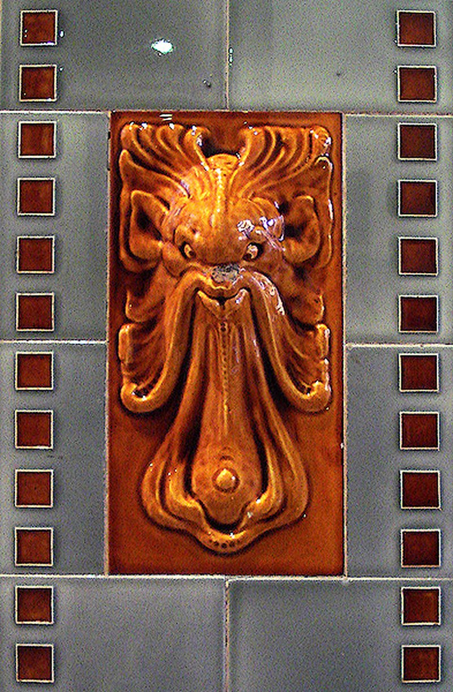
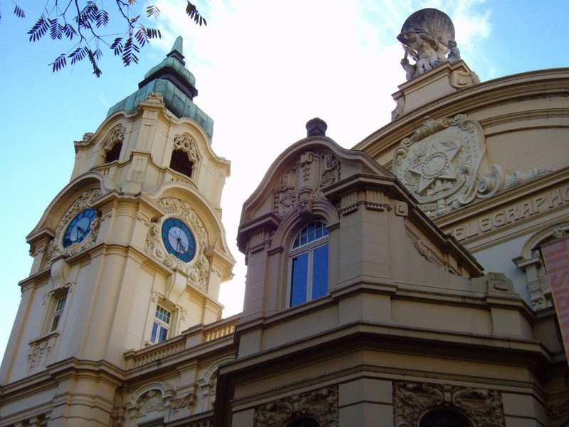
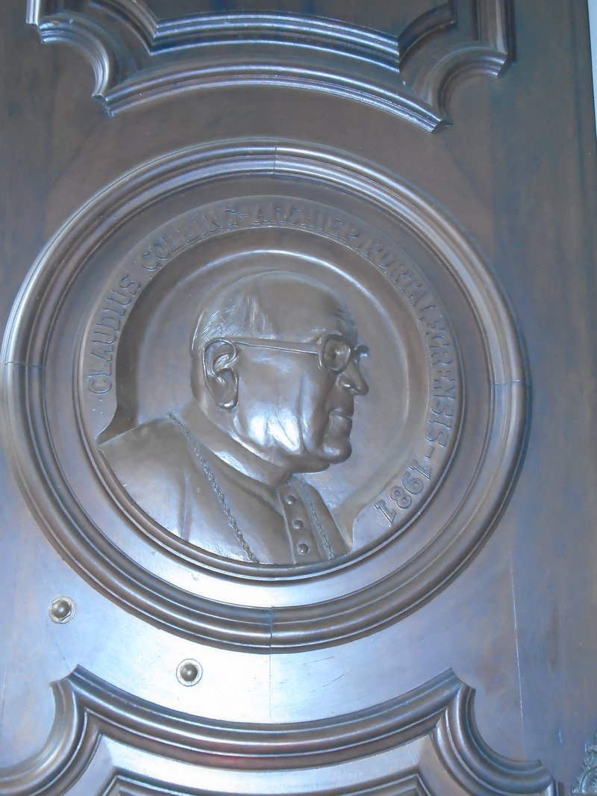
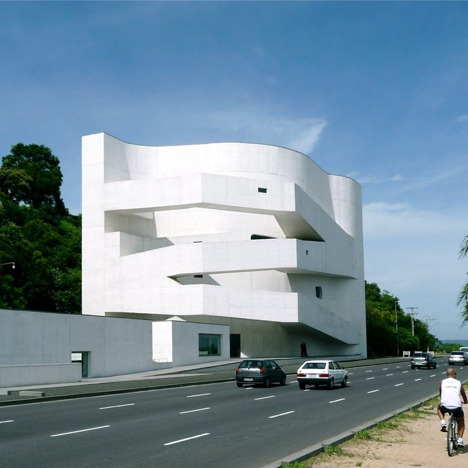
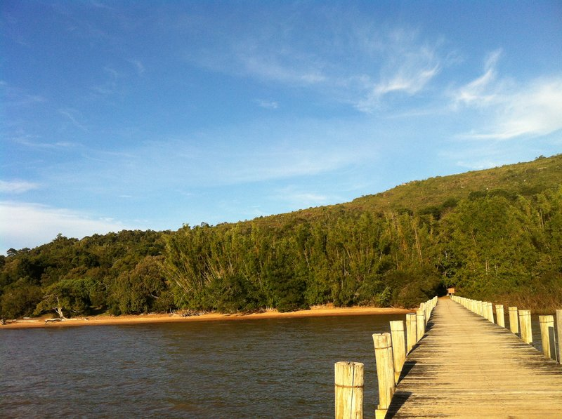
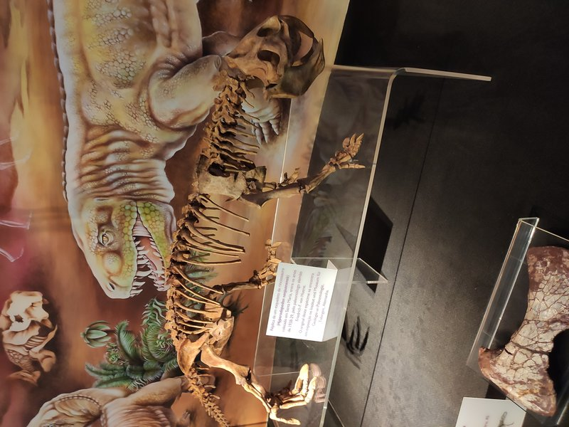

PORTO ALEGRE
ArtHotel Transamerica Collection
BRAZIL
Day 1
🏨 From Hotel: 🚕 10 min → Palácio Piratini
1.
Palácio Piratini
↳ Rio Grande do Sul's seat of government — a 1909 neoclassical palace with ornate state rooms and ceremonial halls, open to visitors on free guided tours.
🏛️ Monday - Friday 11:00am - 4:00pm
🚫 Closed Saturday & Sunday
⏰ ~1 hr
🆓 Free
⚠️ Advance booking required — contact the palace office in advance before visiting
.jpg)
🚶 5 min · 🚕 4 min → MARGS
2.
MARGS
↳ Rio Grande do Sul's principal public art museum, housed in a 1913 Eclectic-style building on Praça da Alfândega, with collections spanning Brazilian modernism and contemporary work.
🏛️ Tuesday - Sunday 10:00am - 7:00pm
🚫 Closed Monday
⏰ ~1 hr 30 min
🆓 Free

🚶 2 min · 🚕 2 min → Memorial do Rio Grande do Sul
3.
Memorial do Rio Grande do Sul
↳ The state's history museum inside the 1913 former General Post Office, tracing the social and political life of Rio Grande do Sul from colonial settlement to the present.
🏛️ Tuesday - Sunday 10:00am - 6:00pm
🚫 Closed Monday
⏰ ~1 hr
🆓 Free

🚕 10 min → hotel
Day 2
🏨 From Hotel: 🚕 10 min → Catedral Metropolitana
1.
Catedral Metropolitana de Porto Alegre
↳ A neo-Gothic-Romanesque basilica whose construction stretched from 1928 to 2005, culminating in a 97-metre copper dome — Porto Alegre's defining skyline element above Praça Marechal Deodoro.

🚶 5 min · 🚕 4 min → Casa de Cultura Mário Quintana
2.
Casa de Cultura Mário Quintana
↳ A seven-floor cultural center in the 1933 Hotel Majestic — home to galleries, cinema, theatre, a rooftop terrace, and the poet's original room preserved intact.
🏛️ Monday - Friday 9:00am - 9:00pm · Saturday - Sunday 10:00am - 9:00pm
⏰ ~1 hr 30 min
🆓 Free

🚕 15 min → Fundação Iberê Camargo
3.
Fundação Iberê Camargo
↳ A landmark contemporary art museum designed by Álvaro Siza Vieira, housing the life's work of abstract expressionist Iberê Camargo — one of the most architecturally remarkable buildings in South America.
🏛️ Thursday - Sunday 2:00pm - 6:00pm
🚫 Closed Monday - Wednesday
⏰ ~1 hr 30 min

🚕 10 min → hotel
Day 3
🏨 From Hotel: 🚕 1h 4min → Itapuã State Park
1.
Itapuã State Park
↳ A wilderness reserve at the southern tip of the metro area on Lagoa dos Patos, combining Atlantic Forest hiking trails with sandy lake beaches — the nearest wild nature escape from the city.

🚕 1h 5min → Usina do Gasômetro
2.
Usina do Gasômetro
↳ A decommissioned 1920s coal-gasification plant turned cultural center — six floors of art and events, with a 112-metre chimney and an open terrace over the Guaíba at sunset.
🏛️ Tuesday - Friday 9:00am - 9:00pm · Saturday - Sunday 10:00am - 9:00pm
🚫 Closed Monday
⏰ ~1 hr 30 min
🆓 Free

🚕 13 min → MCT-PUCRS
3.
MCT-PUCRS
↳ Latin America's largest interactive science museum, with over 1200 hands-on exhibits spanning physics, astronomy, natural history, and technology — on the PUCRS university campus.
🏛️ Tuesday - Friday 9:00am - 5:00pm · Saturday - Sunday 10:00am - 6:00pm
🚫 Closed Monday
⏰ ~2 hr

🚕 8 min → hotel
🗓️ Weekly Closures
Museums & Galleries · Closed Monday
Contemporary Art Museums · Closed Monday - Wednesday
📅 Tours
Viator
↳ A group walk through Porto Alegre's historic center — Mercado Público, Praça da Alfândega, MARGS, and the Guaíba waterfront esplanade.
🕐 9:00am · ⏳ 2 hr · 👥 Group
🚕 10 min
GetYourGuide
↳ A walking tour of Porto Alegre's historic center visiting the main squares, cultural buildings, and museums of the downtown core with a local guide.
🕐 9:00am · ⏳ 3 hr · 👥 Group
🚕 10 min
TripAdvisor
No qualifying tours on TripAdvisor in Porto Alegre.
☕ Cappuccino
Quiero Café · 4.4⭐ · 2600+ reviews
🏛️ Monday - Saturday 7:30am - 10:00pm · Sunday 8:00am - 9:00pm
🚶 6 min · 🚕 4 min
William & Sons Coffee Co. · 4.6⭐ · 180+ reviews
🏛️ Monday - Friday 8:00am - 7:00pm · Saturday 9:00am - 5:00pm
🚫 Closed Sunday
🚶 8 min · 🚕 5 min
Barbarella Bakery · 4.7⭐ · 11500+ reviews
Go Coffee · 4.5⭐ · 90+ reviews
🏛️ Monday - Saturday 8:00am - 8:00pm
🚫 Closed Sunday
🚶 10 min · 🚕 5 min
Vive Le Café · 4.5⭐ · 70+ reviews
🏛️ Monday - Friday 8:00am - 7:00pm · Saturday 8:30am - 7:00pm
🚫 Closed Sunday
🚶 19 min · 🚕 6 min
🫕 Restaurants Near Hotel
Le Grand Burger · 4.6⭐ · 320+ reviews
↳ Artisan burgers with Brazilian beef, craft beer, and casual outdoor seating.
🏛️ Monday - Saturday 11:30am - 11:30pm
🚫 Closed Sunday
🚶 8 min · 🚕 5 min
Koh Pee Pee · 4.7⭐ · 380+ reviews
↳ Authentic Thai since 1989 — one of Porto Alegre's most acclaimed restaurants.
🏛️ Monday - Thursday 7:00pm - 11:30pm · Friday - Saturday 7:00pm - 11:30pm
🚫 Closed Sunday
🚶 10 min · 🚕 5 min
Eat Kitchen · 4.8⭐ · 540+ reviews
↳ Contemporary healthy cooking — grain bowls and salads with seasonal ingredients.
🏛️ Monday - Saturday 11:30am - 2:00pm · 7:00pm - 10:30pm
🚫 Closed Sunday
🚶 10 min · 🚕 5 min
Puppi Baggio · 4.1⭐ · 420+ reviews
↳ Rustic Italian trattoria — handmade pastas and pizzas with an outdoor courtyard.
🏛️ Tuesday - Friday 11:30am - 3:00pm · 7:30pm - 11:30pm · Saturday - Sunday 12:00pm - 4:00pm · 7:30pm - 11:30pm
🚫 Closed Monday
🚶 10 min · 🚕 5 min
Daimu Cozinha Japonesa · 4.6⭐ · 260+ reviews
↳ Japanese: sushi, sashimi, tasting menus — intimate room with a loyal following.
🏛️ Monday - Friday 11:30am - 2:00pm · 7:00pm - 11:00pm · Saturday 11:30am - 2:30pm · 7:30pm - 11:30pm
🚫 Closed Sunday
🚶 12 min · 🚕 5 min
🍽️ Downtown Restaurants
Clube do Comércio · 4.4⭐ · 400+ reviews
↳ Executive lunch buffet — a Centro institution from the early 20th century.
🏛️ Monday - Saturday 11:00am - 3:00pm
🚫 Closed Sunday
Atelier de Massas · 4.5⭐ · 800+ reviews
↳ Handmade pasta daily in a Centro dining room with local artwork.
🏛️ Monday - Friday 11:30am - 2:30pm · 7:00pm - 11:00pm · Saturday 11:00am - 3:00pm · 7:00pm - 11:00pm
🚫 Closed Sunday
Gambrinus · 4.3⭐ · 1200+ reviews
↳ The state's oldest restaurant — German-Brazilian tavern inside Mercado Público.
🏛️ Monday - Saturday 11:00am - 8:00pm · Sunday 11:00am - 3:00pm
Matrice Restaurante · 4.6⭐ · 200+ reviews
↳ Italian-Brazilian lunch buffet — hot dishes and grills in the historic core.
🏛️ Monday - Friday 11:00am - 2:30pm
🚫 Closed Saturday & Sunday
🍮 Local Tastes
Churrasco Gaúcho
↳ Rio Grande do Sul's defining barbecue tradition — thick cuts of beef slow-cooked over wood embers on long skewers, with a communal ritual that distinguishes it from all other regional styles in Brazil.
Chimarrão
↳ Bitter hot yerba mate drunk communally from a gourd with a metal straw — a daily ritual throughout Rio Grande do Sul, offered as a greeting in homes and shared on every occasion.
Arroz de Carreteiro
↳ A one-pot rice dish made with charque — sun-dried salted beef — with onion and garlic; a gaucho staple from the wagon-driver traditions of the Brazilian pampa, still served in traditional restaurants across the state.
🎭 Shows, Performances & Concerts
No exceptional shows, performances, or concerts in Porto Alegre.
🚆 Train Stations Near Hotel
🚊 Estação Mercado
Trensurb Line 1 → São Leopoldo · Esteio · Canoas · Novo Hamburgo.
🚕 11 min
⛲️ Day Trips by Train
São Leopoldo · 35 min
↳ One of Brazil's oldest cities of German immigration, founded in 1824 — with a walkable historic center, the Museu do Imigrante, and streets that preserve the early colonist character of the Serra Gaúcha foothills.
🎫 book at: Omio
⭐ Michelin Restaurants
No Michelin-starred restaurants in Porto Alegre.